本文章將介紹如何建立 GCP 專案
建立專案 ( GUI )
1. 進入 GCP，網址：https://cloud.google.com/
2. 登入 Google 帳號
3. 點擊畫面右上角控制台進入 ( 主頁有各種資訊可以查看 )

4. 第一次進入畫面，有專案點選選取，無專案點選建立
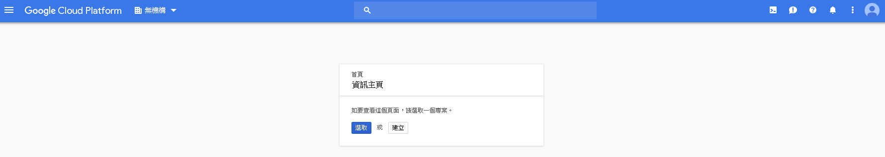
4.1. 選取專案 ( 承 4. 點選選取會出現以建立專案讓你選擇 )，1. 直接點擊專案名稱2下進入專案 2. 專案名稱前方3個點，點一下點選右下開啟進入專案
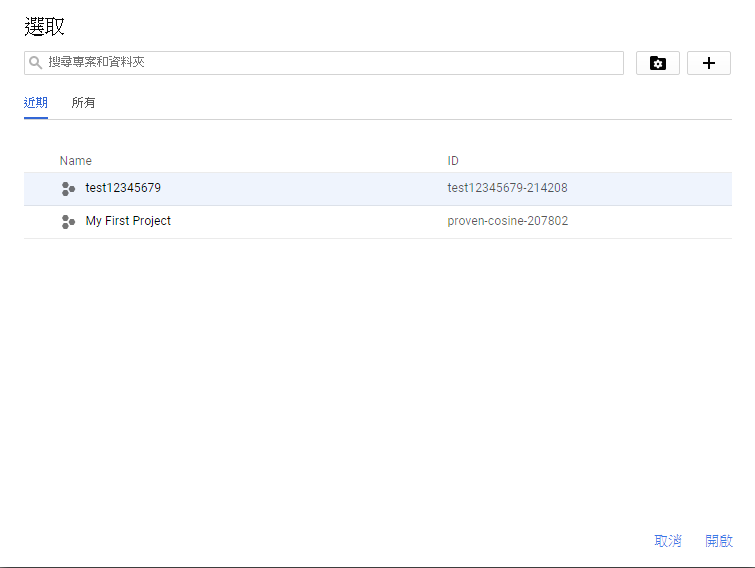
4.2. 建立專案 ( 承 4. 點選建立後會出現建立專案畫面 )，命名名稱和 ID 後點選建立完成
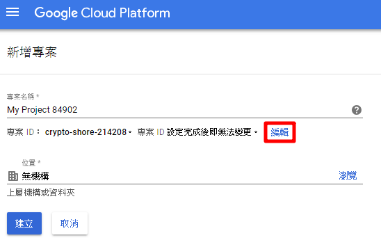
上圖點擊編輯後會出現 ID 的名稱可以更改，但是 ID 更改完專案建立後就無法再變更
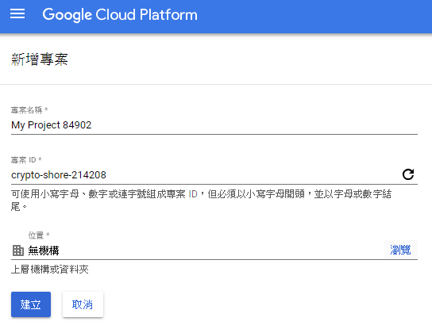
5. 專案已建立，再次進入 GCP 會以最後離開專案為進入畫面，目前所在專案前方會打勾
( 在專案中選擇其他專案 ) 點左上 ▼ 會跑出選取專案，1. 直接點擊專案名稱2下進入專案 2. 專案名稱前方3個點，點一下點選右下開啟進入專案
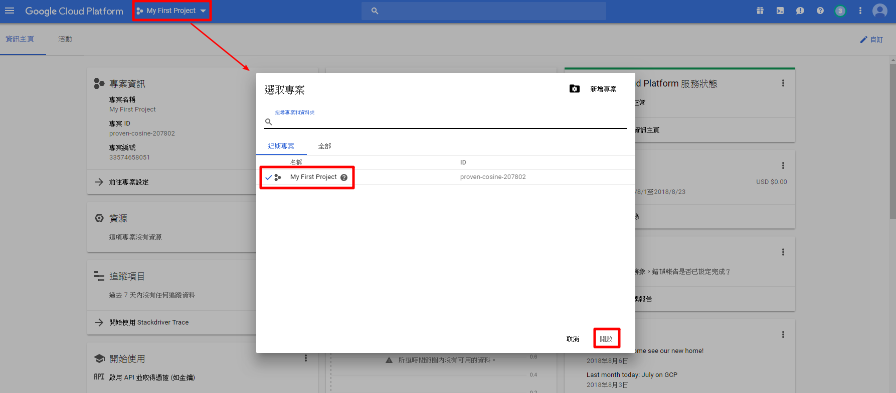
( 在專案中新增其他專案 ) 右上角新增專案建立新專案
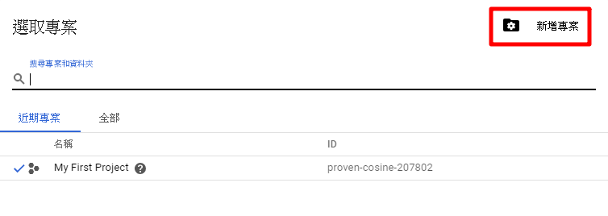
為你的專案命名，下方編輯可以更改專案 ID ( 同樣 ID 更改完專案建立後就無法再變更 )
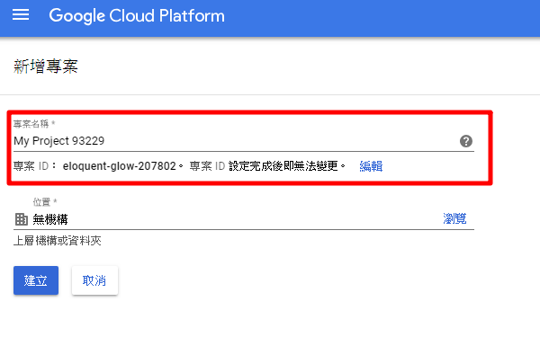
6. 進入專案畫面，主頁專案資訊有一些預設訊息可以看右上自訂可以調整
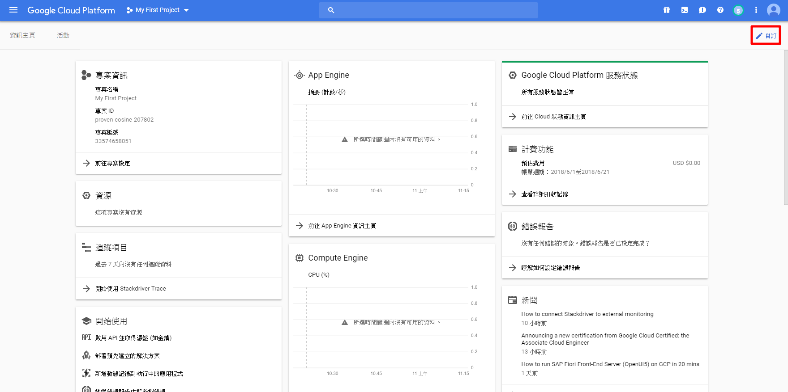
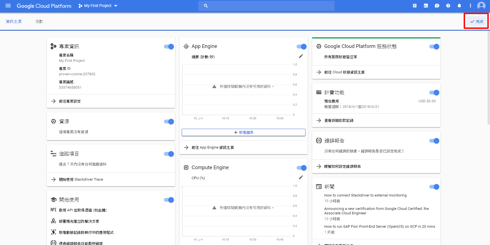
7. 如果想改專案名稱或是刪除專案可以點右上三個點 → 專案設定
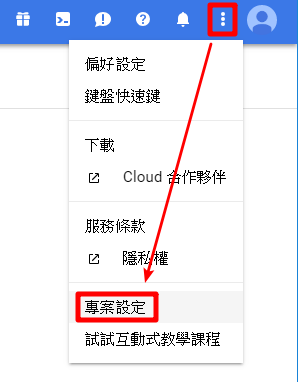
或選擇左上的三條槓 ( 導覽選單 ) → IAM 與管理員 → 設定，做專案更名或刪除
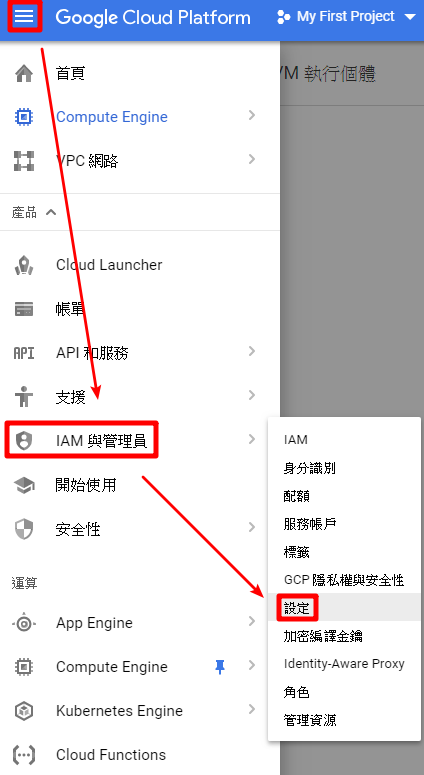
進入設定畫面，更改完名稱後點擊右邊儲存即可 ( ID 上述有說無法再更改 )
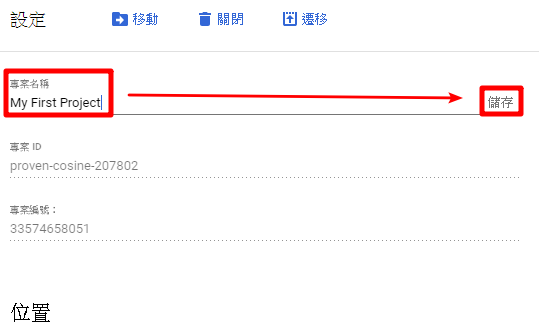
刪除專案，刪除專案需要 30 天刪除需要輸入專案 ID
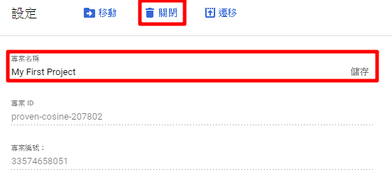
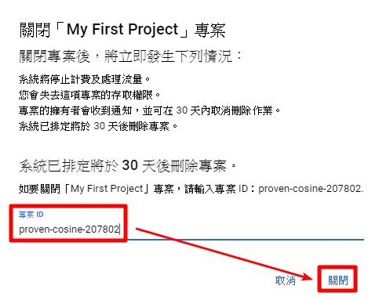
建立專案 ( 指令 )
1. 在 GCP 控制台中，點擊右上角工具欄上的 Cloud Shell 圖標
2. 啟動 Cloud Shell ( 第一次啟動需點選 啟動 CLOUD SHELL 如下圖 )
PS：Cloud Shell 虛擬機裝載了所有您需要的開發工具。它提供了一個持久的5GB主目錄，並在 Google Cloud 上運行。只需使用瀏覽器或 Google Chromebook 即可完成中大部分（ 如果不是全部的話 ）工作。
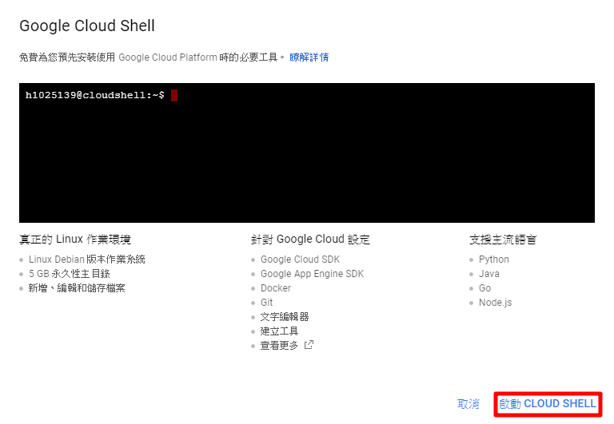
Cloud Shell 啟動畫面
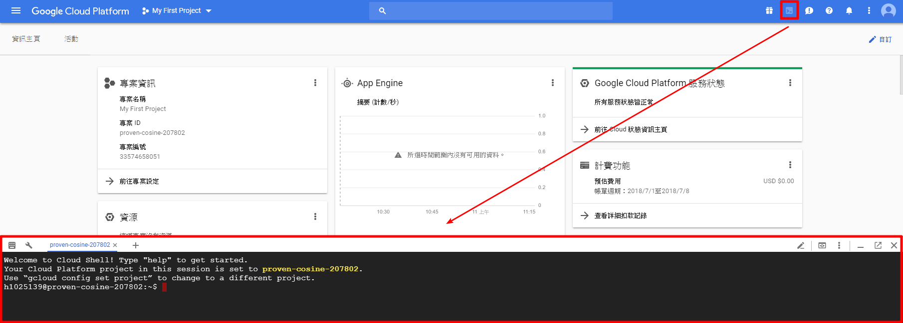
3. 開啟專案指令
1 | gcloud projects create (專案ID) --name=(專案名稱) |
1 | ex：gcloud projects create gvuriegh --name=123456789 |
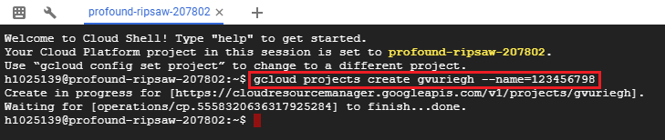
4. 查看帳戶指令
1 | gcloud auth list |
可以看到使用者是誰，其實就是 google 登入帳號
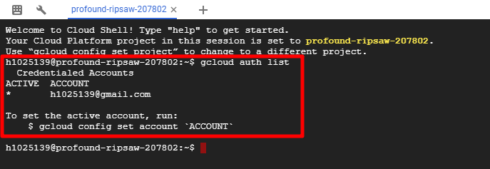
5. 查看專案指令
1 | gcloud config list project |
顯示專案 ID ( ID 盡可能都是自己取比較好分類 )
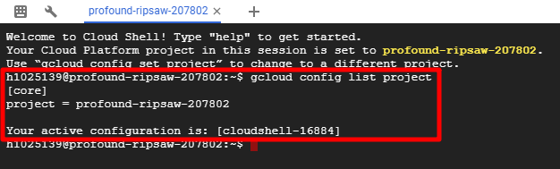
6. 更換專案指令
1 | gcloud config set project (專案ID) |
1 | ex：gcloud config set project proven-cosine-207802 |
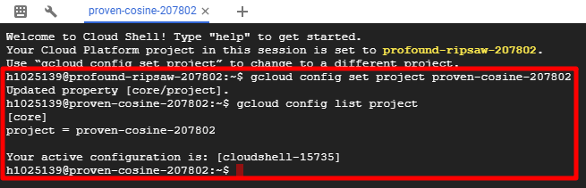
建好後也可以從 GUI 左上點 ▼ 查看你的專案名稱跟 ID
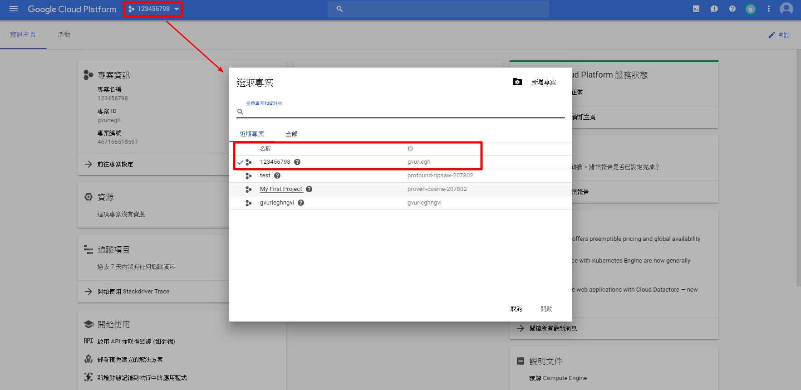